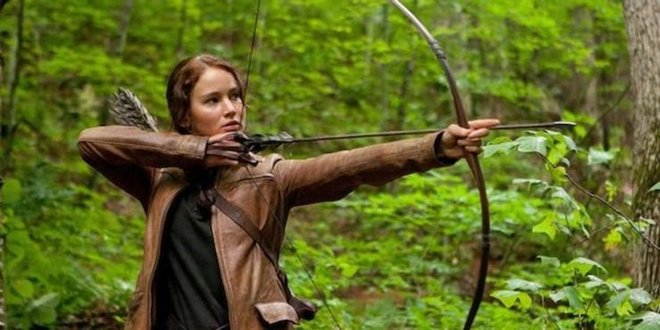
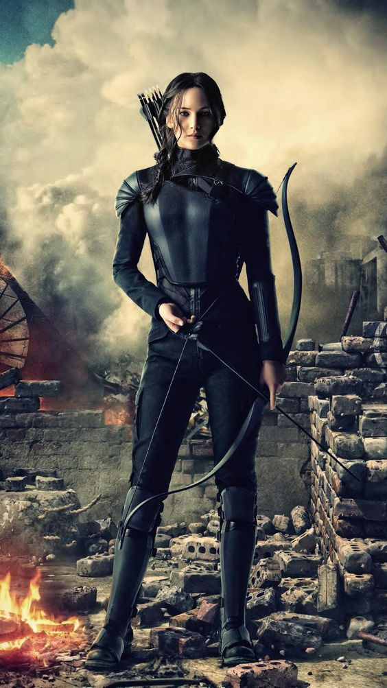
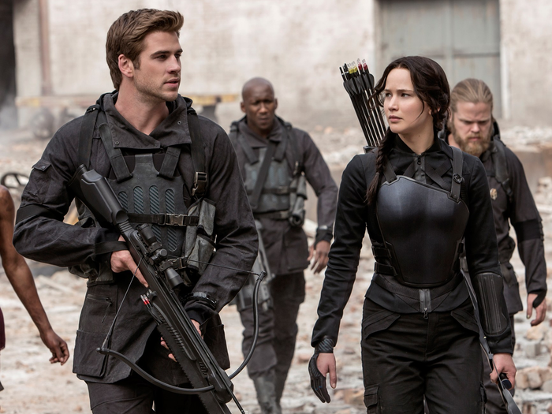
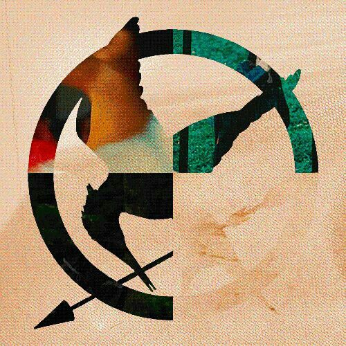

Everything Jennifer Lawrence Has Said About 'The Hunger Games' Movies
By Jelen Aska | 13th of June,2021

The movie The Hunger Games — based on Suzanne Collins' book of the same name — premiered in 2012 and it immediately became a huge hit. In the dystopian sci-fi movie, Jennifer Lawrence (who was 20 years old at the time) portrayed the lead role of Katniss Everdeen and with that, she became a global star. The movie franchise wrapped up in 2015 with the last installment The Hunger Games: Mockingjay — Part 2.Today, we're taking a look at everything that Jennifer Lawrence has said about the movies.
From whether she's Team Gale or Team Peeta to which movie she favors the most — keep on scrolling to find out!
1. The Actress Admitted She Always Knew The Movies Would Be Big
Even back in 2011 Jennifer Lawrence already knew that The Hunger Games would become one of the biggest and most famous movie franchises of all time. Here's what the star revealed about her feelings at the time:
I never questioned that these movies were going to be really huge. When I was offered the part, it was like, 'You can say no and keep doing indie films and have your minivan soccer-mom dreams that you thought were going to be your future. Or you can change everything and decide to do this.
2. Jennifer Admitted She Wouldn't Participate In A 'The Hunger Games' Show
When news broke of a potential The Hunger Games prequel show, Jennifer Lawrence of course had her own opinion on it. Here is what the actress — who portrayed Katniss Everdeen in the movies — had to say about a potential show:
I wouldn’t be involved. I think it’s too soon. They’ve got to let the body get cold, in my opinion.

3. But She Would Love To Be Involved In A Story Set In The Past
Here's what Jennifer Lawrence revealed in an interview with Entertainment Weekly about a prequel to the movie:
The interesting part of the story for me is to go back 75 years earlier and see how everything became the way it is. I’m sure if [author] Suzanne [Collins] were to get inspired and decide there’s another story that’s important for her to tell that exists within the world of Panem and whether about the Dark Days, another character, or another set of Games, whatever that could be, I’m sure it would be great. And I’d loved to be involved, absolutely.
4.She Couldn't Decide Between Being Team Gale And Team Peeta
In an interview with Seventeen magazine, the actress revealed that she couldn't decide which of her co-stars' characters she liked more. Here's what Jennifer said:
I think I was [Team] Gale until he started getting a little too trigger-happy. Or maybe first Peeta and then Gale or Gale, then Peeta? I went back and forth. I flip-flopped.

5. Jennifer Also Revealed Which Her Favorite And Least Favorite Movie Of The Franchise Was
During an appearance on Watch What Happens Live With Andy Cohen, Jennifer revealed that her favorite movie in the franchise was the first one. Her least favorite on the other hand was The Hunger Games: Mockingjay – Part 1 and here's why:
I guess the third one, because ... they split it into two, and it kind of got stuck between 'Catching Fire,' and that being said, I haven't seen any of them in years, so maybe I'd be wrong. I'm just guessing that the third one would be the worst, but I don't actually know.
